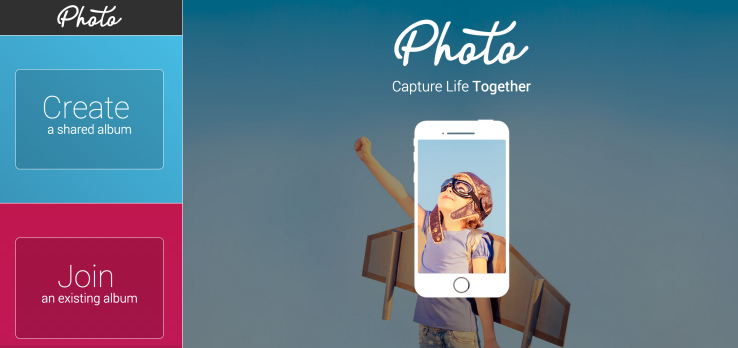
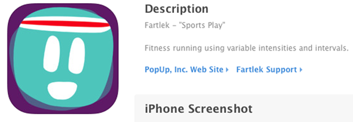
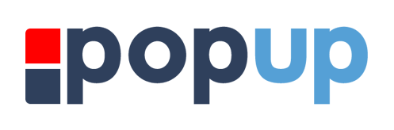
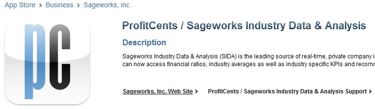
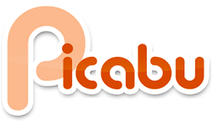
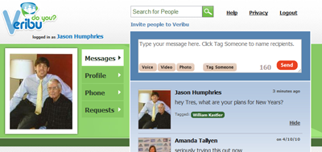

| Jason Humphries |
Marketing Ops, Product Management, iOS Developmentemail me : jmhdev@gmail.com |
|
June 2019 - Present Verkada brings the ease of use that consumer security cameras provide, to the levels of scale and protection that businesses require. By building high-end hardware on an intuitive, software platform, modern enterprises are able to strengthen the safety and productivity of their surveillance operations. |
|
Nov 2017 - June 2019 ** Acquired by RE/MAX in 2019 ** First uses AI to help real estate agents win more listings from their sphere, database, and social networks. We predict who will sell by tracking 700+ signals across 214mm people nation-wide. We deliver this to you in a simple, easy-to-use mobile app and desktop app. Our mission is to help real estate professionals work more efficiently, and with greater confidence. Listings come from relationships. First makes it easy for you to reach sellers in your network months before they list – or hear from your competition. |
|
Released Nov 2017 The Twenty Minute VC is the World's Largest Independent VC podcast featuring the likes of Brad Feld, Guy Kawasaki, Mark Suster and many more - hosted by Harry Stebbings. I worked with Harry to build the official standalone iPhone app. Using this app, listeners can add labels, send Harry feedback, and mark your favorite episodes. You'll also get quick access to the favorite books and favorite blogs the guests suggest during the show. |
|
May 2014 - Nov 2017 ** Acquired by MixBook in 2017 **
WedPics is a mobile & web-based photosharing app created specifically to capture the entire wedding experience. WedPics raised its Series A of $1.8MM in March 2014, covered in this TechCrunch article. - Lead all WedPics iPhone app related work including coding, delegating workload and scoping new features with business development. - Improved and maintained aspects of the app such as multi threading, memory management, and caching that allowed the app’s performance and the user’s experience to keep up with the scaling of the user base from 1M to 7M. - Researched new iOS technologies and how they could be integrated into WedPics, such as advanced image filtering, Swift and facial recognition. This includes going to iOS conferences and staying up to date with multiple online learning libraries. - Implemented in-app purchasing, allowing WedPics users to unlock premium features which accounted for more than $500k of WedPics’ revenue in the first year. - Built local persistence using Core Data, and integrated the app’s network data model to speed up user experience and allow usability of the app offline. - Created a photo editor from scratch, which included custom text, filters, stickers, using lower-level iOS graphics frameworks like Core Graphics and Core Image. - Added the ability for users to order prints of their photos within the iPhone app, which now accounts for WedPics' 2nd biggest revenue stream. - Instituted pull requests and peer review for the iOS team. - Built PhotoApp, a generic event-based photo sharing app, by leveraging and optimizing aspects of the core WedPics code base in order to ship the minimum viable product in two months. |
|
August 2015 - August 2017 
Photo App is a mobile & web-based group photo and video sharing app for any event or occasion. Capture and share unlimited photos taken by your friends and family. PhotoApp was built by the same owner of WedPics, Deja Mi, Inc.. The app was featured in this TechCrunch article.
|
|
April 2014 
Fartlek means "sports play" in Swedish. It's a fitness running technique using variable intensities and intervals. Check out the wikipedia article here. |
|
August 2012 - April 2014 PopUp is a platform for sharing location based information. Users create notes with an optional photo at a specific location, with a specified radius. When other PopUp users who follow the creator of that popup enter that geographic region, they get the note that was left there. I built the iOS app and helped design the backend, which is Ruby on Rails + MongoDB. The biggest challenge of the iOS implementation was efficient use of battery while providing the user with constant location. - Built the PopUp iPhone app, which allowed users to discover and share digital notes in the real world with other people. - Constantly improved on the app’s location tracking by optimizing the usage and timing of different sources of location to deliver users constant, accurate location without draining the battery. - Technical co-founder; received seed and follow-up financing from an incubator program in Durham, NC called The Startup Factory (http://thestartupfactory.co). |
|
September 2012 - December 2012 I applied to The Startup Factory, a startup accelerator in Durham, NC, with two co-founders and we were accepted in the fall 2012 class. The company we formed was PopUp. We received seed funding, mentorship, and working space for the life of the three month program. The program is led by Chris Heivly and Dave Neal. |
|
March 2012 - Present MugMatch is a game that a couple friends and I designed and built. I developed a system that pulls and compiles detailed arrest information from public state mugshot websites. The app uses that information for a game that presents the user with a mugshot and two choices to guess what the arrest was. We then added mugshots of college student athletes and grouped them by school. We've gotten over 30,000 in-game guesses on the iOS platform alone with no marketing. I built everything except the Android app. |
|
March 2011 - August 2012 (Android version) Sageworks is the world leader in financial analysis of privately-held companies. I built their first mobile app in native iOS format. I had never done iOS development before this, so I had to teach myself iOS and Objective C while I wrote the app. The app was first iPhone only, then universal for iPad and iPhone. When I started, the current version of iOS was 4. - Convinced the CEO to build an iOS and Android app for the company’s customers. - Implemented specific endpoints in coordination with Sagework’s development team in order to provide customers with in-depth financial industry reports based on the Sagework’s data. - Picked up iOS and Android mobile development without prior knowledge to build the apps. - Released each app in three months, and adapted the iPhone app to iPad. |
|
September 2010 - April 2011 
At first, Picabu was the name of a device that my first startup (Veribu) was going to release. It was 2009, so Facetime on the iPhone didn't exist. While building Veribu, we ditched that idea when Apple started releasing forward facing cameras on the iPhone.
|
|
November 2009 - February 2010 HowRandom was a side project that I built which was basically Chatroulette without video (No "Penis Problem"). It got written about in a TechCrunch article by Alexia Tsotsis in November 2009. The attention it got was tremendous, and the service was a lot of fun. The traffic slowly died and it was plagued by the "empty room syndrome". |
|
June 2009 - June 2011 Veribu was my first startup. After graduating with a Finance degree from the University of South Carolina in 2009, I decided to pursue my true passion for computers and start a web application with a friend. It had been four years since I had done any programming, so I dusted off my PHP books and got a prototype working. Veribu was like Facebook with in-browser video chatting. In 2009, this wasn't being done. It was like an in-browser Skype with social networking. You could call and text other people in the browser. We raised a six figure angel investment and spent time in Charleston and San Diego. - Built a media-rich communications website using Flash and PHP so that users could keep in touch via video chats, phone calls, or text messaging. - Rebuilt the video chat system from scratch using ActionScript and Adobe Flex. - Secured a six-figure angel investment. |